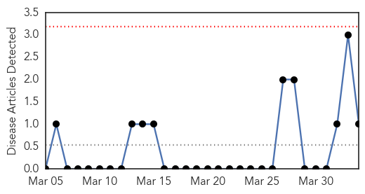
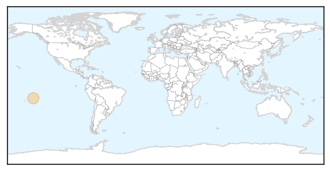
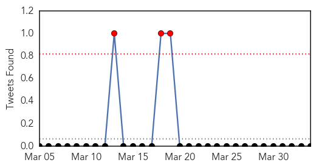
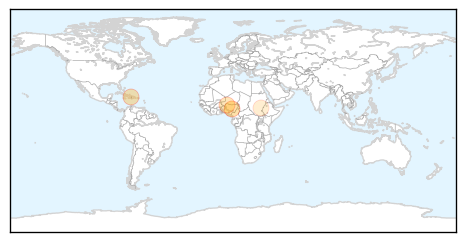

Chikungunya
30-Day Web Trend
0 alerts, 0 warnings

30-Day Twitter Trend
1 alerts, 0 warnings

Article Locations
Article Confidences

Top Articles:
Top Tweets:
-
No tweets found for Apr 03, 2014
Cholera
30-Day Web Trend
2 alerts, 2 warnings

30-Day Twitter Trend
0 alerts, 0 warnings

Article Locations
Article Confidences

Top Articles:
- 0.998
- Cholera outbreak kills 4, sickens over 100 in Nigeria's Plateau state
- 0.934
- UN calls for Marshall Plan to tackle cholera in Haiti
- 0.852
- Six die, 113 hospitalised in fresh Plateau cholera outbreak
- 0.810
- Cholera kills four in Plateau
- 0.542
- UN officials cite 'race against time' to prevent humanitarian catastrophe in South Sudan
Top Tweets:
- 0.559
- MT: RDC Province du Katanga - >2500 cases of cholera and 83 deaths since Jan. 2014 http://t.co/d8VH9BYhI5